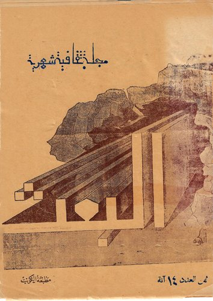
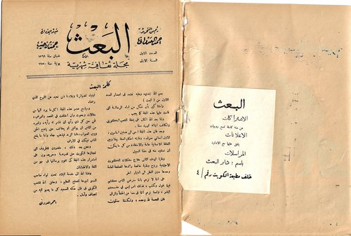
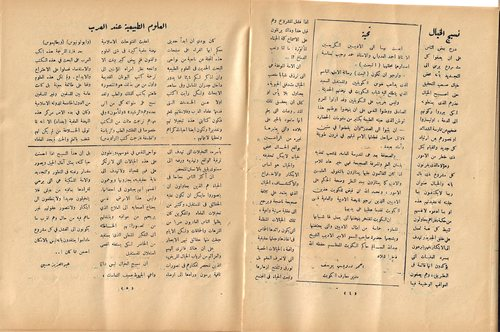
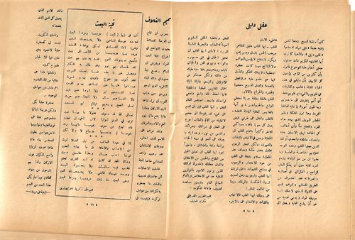

مطبوعة أصدرها
مجلة البعث
مجلة ثقافية شهرية · الكويت · العدد الأول — يونية ١٩٥٠
في يونيو ١٩٥٠ أصدر حمد عيسى الرجيب مع أحمد مشاري العدواني مجلة «البعث» من دار البعث بالكويت، وهو يومئذٍ في الثامنة والعشرين. تولّى العدواني رئاسة تحريرها وتولّى الرجيب إدارتها، وسمّاهما معاصروهما «صاحبَي المجلة». ولم تدُم طويلاً؛ فقد أُشير إلى توقّفها في مجلة البعثة قبل نهاية ١٩٥١. ولم يبقَ منها إلا نسخ قليلة، والعدد الأول محفوظ لدى الأسرة، ومنه هذه الصفحات.
بيانات العدد الأول
- التاريخ
- شعبان ١٣٦٩هـ · يونية ١٩٥٠
- الترقيم
- العدد الأول — السنة الأولى
- الوصف
- مجلة ثقافية شهرية
- رئيس التحرير
- أحمد العدواني
- مدير الإدارة
- حمد رجيب
- الدار
- دار البعث — خلف مطبعة الكويت رقم ٤
- الطباعة
- مطبعة الكويت
- ثمن العدد
- ١٤ آنة
- الاشتراك
- تسع روبيات للسنة الكاملة
- تصميم الغلاف
- محمد الكوه
تحية
أحمد درويش يوسف، مدير معارف الكويت — ص ٤ من العدد
أبعث بها إلى الأديبين الكريمين الأستاذ أحمد العدواني والأستاذ حمد رجيب بمناسبة إصدارهما مجلتهما (البعث).
وأرجو أن تكون (البعث) رسالة الأمل الباسم الذي يداعب نفوس الكويتيين، والمستقبل السعيد الذي يتطلّع إليه شباب الكويت في نهضتهم الحديثة.
وليس بغريب على الكويتيين — وقد أُوتوا العزم الصادق ووطّنوا النفس على أن ينهضوا بوطنهم، هذا الوطن الذي حبته الطبيعة بكثير من مقوّمات الحضارة — أن يثبوا إلى الصدر، وأن يقطعوا في سنين قلائل مراحل قطعتها الأمم قبلهم في قرون طويلة وآماد بعيدة.
والصحافة بعدُ هي المدرسة العامة للشعب، تغذّيه بلسان العلم والمعرفة الصحيحة، فهي خير هادٍ للأمم إذا كان القائمون عليها يمتازون بالتفوّق العلمي والأدبي كما يمتازون ببُعد النظر وصحة الحُكم على الأمور. ونحمد الله أن قيّض للكويت هذين الأديبين اللذين نرجو للنهضة الأدبية والعلمية في الكويت تقدّماً عظيماً على يديهما.
إن الكويت لتفخر بنهضتها التي يعمل لها شبابها المملوء حماسةً من أمثال الأديبين، والتي يحتضنها ويشجّعها حضرة صاحب السمو الأمير الأديب الشيخ عبد الله السالم حاكم الكويت المعظّم، حفظه الله ذخراً للبلاد.
أحمد درويش يوسف مدير معارف الكويت
تصميم الغلاف
محمد الكوه، مصمّم الغلاف — ص ١١ و١٤ من العدد
يسرّني أن تُتاح لي الفرصة للمساهمة بجهدي المتواضع في إخراج مجلة البعث الغرّاء، ويشرّفني أن أساهم بوضع لبنة صغيرة في ذلك البناء الناشئ الذي أرجو ويرجو معي شباب العرب أن نراه شامخاً ثابت الأركان، ومناراً عالياً يشعّ دائماً بنور العلم والأدب والعرفان.
ولقد عُرض عليّ الاسم الذي اختاره صديقاي الأستاذان حمد رجيب وأحمد العدواني صاحبا المجلة، فتأمّلت الانفعالات التي جاشت في نفسيهما، وتأمّلت ما يضطرم به فكراهما من عوامل تركّزت فتبلورت في ذلك الاسم الذي يحمل كلّ المعنى الذي يقصدانه.
وتأمّلت الكويت.
فبدت لي كصخرة صلبة لا تجود بخير دفين فيها إلا لجبّار طموح كدود. وتأمّلتها فإذا هي خالية من الماء العذب، أهمّ عامل من عوامل الوجود. صخرة صلبة بكر.
ولكن عزيمة أبنائها وطموحهم تغلّبا على قوى الطبيعة ونواميسها، فأخرجوا من بطون الصخر بناءً عالياً شامخاً محدود الزوايا واضح الكيان قويّ الأركان، وإذا بهم ينتزعون من جوف الظلام نوراً. ولم يكن هذا البعث من العدم،
— تُكمَل البقية في ص ١٤ —
ولكن مما توارثه هؤلاء الأبناء من مجد العروبة الغابر الذي لا زالت رواسيه تجري حيّة الأصول في دمائهم الحارة.
ولقد وضحت لي هذه الحقائق جليّة أمام عينيّ. فجرت ريشتي وأخرجت هذا الغلاف الذي أرجو أن يكون قد أدّى الغرض الذي يقصده صديقاي الطموحان. والله أسأل للكويت ولأبنائه كلّ التوفيق، وللزميلين كلّ التقدير.
محمد الكوه دبلوم معهد التربية العالي — قسم الرسم
من العدد الأول




المعروض هنا ما يخصّ حمد الرجيب والمجلة نفسها. وسائر موادّ العدد لكتّاب آخرين ولا تُنشر هنا. اضغط أي صفحة لتكبيرها.
العدد الأول من مجلة «البعث» — الكويت، شعبان ١٣٦٩هـ / يونية ١٩٥٠ — نسخة أصلية محفوظة لدى أسرة حمد عيسى الرجيب، وورقها هشّ بالغ التلف، وما عُرض هنا هو ما أمكن مسحه منه. النصّان المنقولان لكاتبيهما، ونُقلا عن الأصل مع ضبط الرسم الإملائي لتيسير القراءة. وقد أشارت مجلة البعثة إلى إعداد المجلة في مايو ١٩٥٠، وإلى توقّفها في مقال «لماذا فشلت الصحافة في الكويت؟» المنشور في ديسمبر ١٩٥١. لمن يملك أعداداً أخرى من المجلة أو معلومة عنها، يسعدنا التواصل.